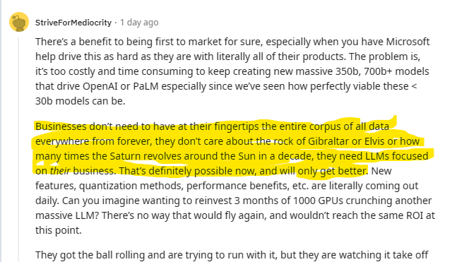

Motes and Leaping LLaMas
Things are changing fast in AI land. You may not realize it, but a war is on between a few giants and everyone else to see who gets to win the future of humanity.
About a month ago, a memo allegedly leaked from Google was posted here – Google "We Have No Moat, And Neither Does OpenAI". If you follow the AI space, you might have seen it. If not, you should have a look. I won’t regurgitate it here, but here is a screenshot of its opening statements.
I (along with lots of other people) began to suspect what the leaked memo says a few weeks before it was published when, seemingly suddenly overnight, it became possible to run impressively decent LLMs for yourself locally with a good GPU or (comparatively) inexpensive cloud compute.
The Google Trends chart is interesting. For a brief time “ChatGPT” was practically synonymous with “AI” but recently a gap began opening as the events the anonymous author notes began piling up quickly.
People in the US are more interested in AI than Taylor Swift (on Monday through Friday), which is to say, they are very interested.
The Open Source AI Community is on Fire
Today it is impossible for me to keep up with the rapid developments coming from the open source AI communities on GitHub and Hugging Face.
Hugging Face
Hugging Face is a privately owned company that is not nearly as well known as OpenAI, but in spite of the silly name, might be the more interesting of the two. Hugging Face Transformers are a foundational element that makes using any of the 200,000+ machine learning models on they store easy to use.
Oobabooga Text Generation Web UI
Text Generation Web UI is an outstanding project that makes it easy to use models from Hugging Face. It comes with a simple batch file setup that worked perfectly for me. There are a variety of extensions, including an API extension. The API extension makes it easy to use various models as backends to processes from any language that can talk to a web service. For my own benefit, I made a C# library to make using the API extension easy with .NET. You can find it here: DougWare.OobaboogaAPIHelper 1.0.0. I will write more about this future another posts.
In the meantime, the source code is here: ElumenotionSite/Projects/OobaboogaAPIHelper GitHub, and there is a console app that demos its use.
Run Locally or in the Cloud
It makes my office warm as the NVIDIA RTX 4090 does its work, but I am getting very useful results right here at home. My friend pointed out that I don’t have to heat my house. There are many cloud VM hosting options that will give you the power you need for a month of dedicated time for less than the price of my desktop and power bill. A cloud VM with an NVIDIA A100 card is roughly twice as powerful as my desktop.
My next several posts will be all about this subject. There is no question that ChatGPT 3.5 and 4 are more powerful, but does that matter even now?
Reddit and Discord Communities
There are many and one I especially enjoy at the moment is /r/LocalLLaMA. They aren’t all convinced open source has the upper hand. I however finding myself in agreement with /u/StriveForMediocrity.

Having tested several models over the last few weeks I think it is at least plausible that open source AI is a better choice for many applications than the ironically named, but closed source, OpenAI.
On the Other Hand…
It simply cannot be denied that the current best large language model at the moment is ChatGPT4. It is also one thing for me to use an entire GPU exclusively for myself and a completely different thing to build a system that can respond to a large user population at scale.
It’s an exciting time!
--Doug Ware, June 5, 2023
- A moat is a defense against invaders, a mote is a tiny piece of substance such as this post